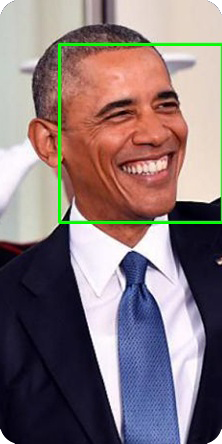
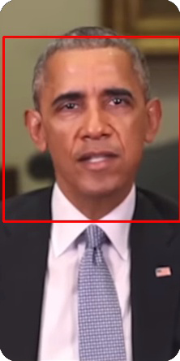
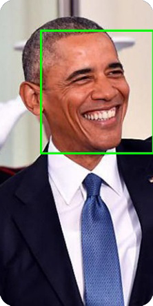
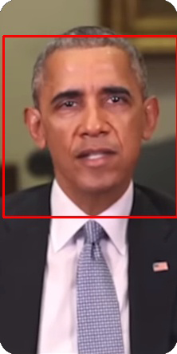

Experimental Results
We have performed extensive training and hyperparameter tuning, such as comparing different EfficientNet models, number of convolution layers, weights, data augmentations, dropout rates, and regularizers. In the end, the following settings give us the best results:
- Input Size: 128 x 128
- Batch Size: 32
- Optimizer: Adam
- Learning Rate: 0.0001
- Dropout Rate: 0.5
- Regularization: L2 with 0.001 rate
- Accuracy: 92.36%
- Precision: 96.95%
- Recall: 95.94%
- We have achieved better results than XceptionNet and MesoNet based on a public deepfake detection benchmark